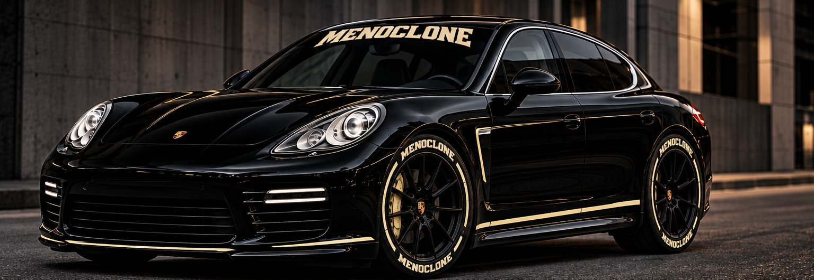
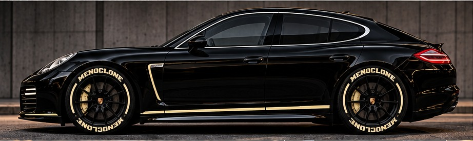
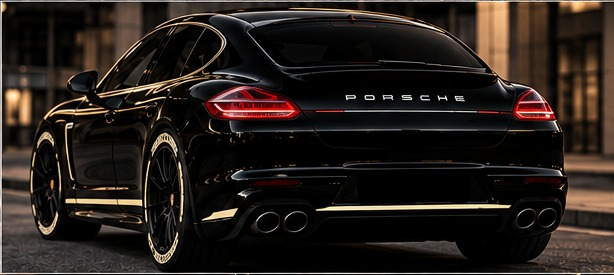
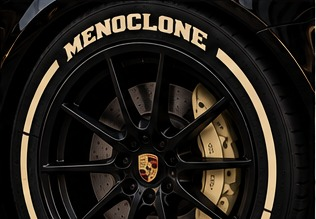

NOT BUILT
TO BLEND IN.
A personal vision for the 2011 Porsche Panamera, imagined by OdotNYC and expressed through the visual language of MENOCLONE Motorsports.

A DIFFERENT KIND OF PORSCHE.
For OdotNYC, the Porsche Panamera has long represented a dream car. Its silhouette stands apart from the iconic 911 and the rest of the Porsche lineup: longer, unexpected, and unmistakably its own.
That individuality deserves more than a conventional treatment. This concept adds a special touch from OdotNYC’s imagination—personal, restrained, and unmistakably MENOCLONE.
STEALTH WITH A SIGNATURE.


Gloss black paint anchors the look. A cream MENOCLONE windshield banner and carefully placed cream detailing give the car a strong identity without overpowering the original Porsche form.
THE TIRES MAKE THE STATEMENT.
The MENOCLONE tire stickers are an exclusive signature of MENOCLONE Motorsports, a sector of MENOCLONE. Cream lettering follows the tire sidewalls, drawing from motorsport culture while remaining aligned with the brand’s visual identity.
These custom tire graphics complete the concept without adding unnecessary body decals or UFO symbols.
